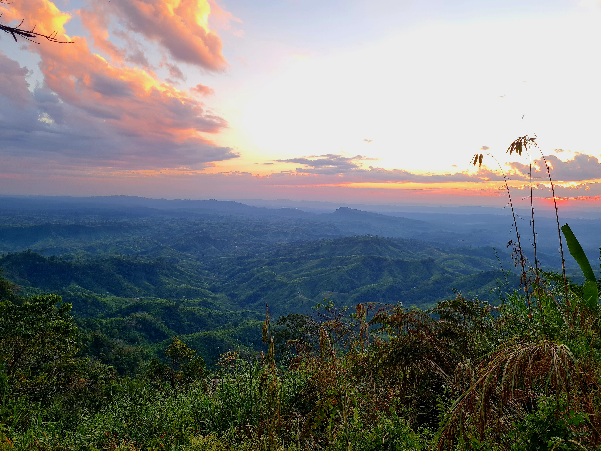

Sajek valley is known for its natural environment and is surrounded by mountains, dense forest, and grassland hill
tracks.Sajek is a union located in the north of Chittagong Hill Tracts.

konglak hill tracking
One of the major attractions of Sajek Valley is seeing the sunrise & sunset from Konglak hill.It takes 30-40 minutes of tracking to reach the top of the mountain.